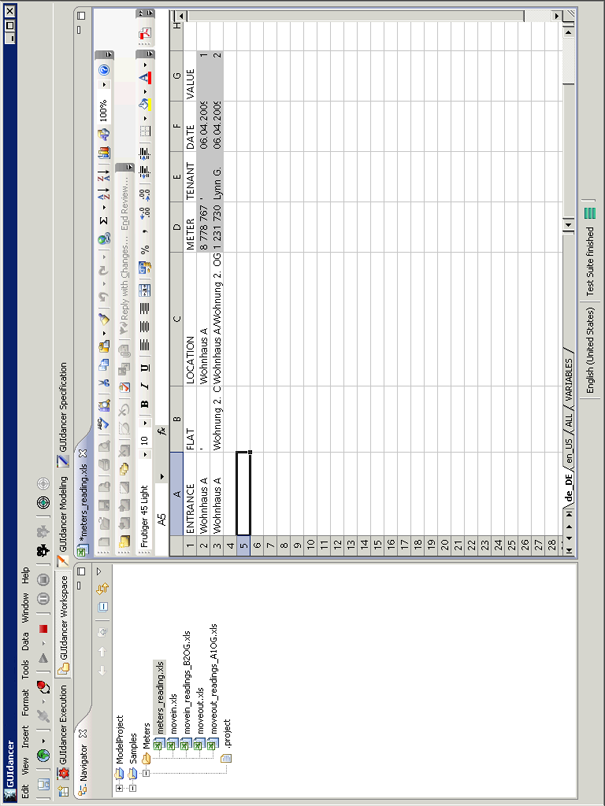

5.1.4 The workspace perspective
In the workspace perspective (5.4), you can view the Projects and files in your workspace. The workspace perspective contains the following:
- Navigator View
- An editor area to view e.g. Excel and HTML files.
Figure 5.4: Workspace Perspective
|  |
Copyright BREDEX GmbH 2014. Made available under the Eclipse Public License v1.0.